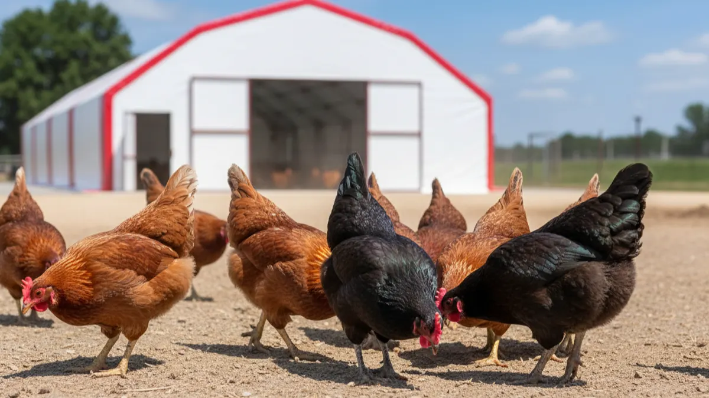

Yumurtacı tavuk kaç yıl yumurtlar? Verim ömrü ve sürü yenileme
Tavuk üç yıl da yaşar, beş yıl da; ama para kazandıran ömrü çok daha kısa. Verim eğrisi nerede pik yapar, ne zaman düşüşe geçer ve sürüyü ne zaman yenilemek gerekir, rakamlarla konuşalım.

"Bu tavuklar kaç yıl yumurtlar hocam?" En çok bu soruyu alırım. Ardından şu gelir: "Benimkiler üç yaşında, hâlâ yumurtluyor ama eskisi gibi değil." İkisi de doğru. Tavuk ölene kadar arada bir yumurtlar, doğru. Ama seni geçindiren ömrüyle biyolojik ömrü aynı şey değil. Tavuk beş altı yıl yaşar; para kazandıran verim ömrüyse çoğu işletmede 1,5-2 yıla sığar. Aradaki farkı okuyamayan üretici, yem parasını yaşlı sürüye yatırıp folluğu her sabah yarı boş bulur.
Bu yazıda ticari yumurtacının verim eğrisini baştan sona açacağım: kaçıncı haftada yumurtaya başlar, ne zaman pik yapar, yılda ne kadar düşer, ne zaman yenilemek gerekir. Bir de yaş-verim tablosu koyacağım, kendi sürünün nerede durduğunu göreceksin.
Yumurtacı tavuk kaç haftada yumurtlamaya başlar?
Ticari bir yumurtacı melez (Lohmann, Hy-Line, Isa Brown gibi kahverengiler) genelde 18-20. haftada ilk yumurtayı verir. İlk günler ufak, bazen çift sarılı, bazen kabuksuz gelir; panik yapma, sistem daha oturmamıştır. Yaklaşık 22. haftada sürünün yarısı yumurtaya geçer, buna "%50 verim yaşı" denir ve iyi bir sürüde bu 140-150 günü bulur.
Buradan sonra tırmanış hızlıdır. 26-30. hafta arası pik dönemidir; iyi bakılan bir sürüde günlük verim %90-95'e çıkar. Yani 100 tavuktan her gün 90-95 yumurta alırsın. Bu tablo yaklaşık 6-8 hafta yüksek platoda kalır, sonra yavaş yavaş inişe geçer. Bu inişi durduramazsın; genetik ve fizyoloji böyle kurulmuş. Ama dikliğini bakımla yönetebilirsin.
Verim geç başladıysa ya da pik hiç %90'a çıkmadıysa çoğu zaman suç tavuğun değildir. Işık programı yanlıştır, yem proteini düşüktür, yarka zamanında formuna gelmemiştir. Bunun ayrıntısını yumurta verimini düşüren kümes hataları yazısında tek tek ele aldım; pik alamıyorsan önce oraya bak.
Verim eğrisi: pik, düşüş ve yem dönüşümü
Pikten sonra kabaca her ay %1-1,5 puan düşüş normaldir. Bunu yıla vurunca birinci verim yılını %80'ler civarında bir ortalamayla kapatırsın. İkinci yıla molt sonrası devam edersen ortalama %65-70'e iner. Sayılar ırka, bakıma ve mevsime göre oynar ama trendin yönü hep aynı: aşağı.
Asıl mesele sadece adet değil. Tavuk yaşlandıkça iki şey daha bozulur:
- Yem dönüşümü kötüleşir. Genç sürü 1 kilo yumurtayı yaklaşık 2 kilo yemle yaparken, yaşlı sürüde bu 2,4-2,6 kiloya çıkar. Yani aynı yumurta için daha çok yem yakarsın. Yem, işletme giderinin %65-70'i olduğuna göre bu doğrudan cebine yansır. Yem hesabını net tutmak istersen tavuk başına günlük yem hesabı yazısındaki tabloyla kendi sürünü çıkar.
- Kabuk zayıflar. Yaşlı tavuk daha iri yumurta yapar ama aynı kalsiyumu daha geniş bir yüzeye yayar. Kabuk incelir, kırık ve çatlak oranı artar. Toplarken, taşırken, satarken zarar büyür. Kabuğun neden inceldiğini ve kalsiyumu nasıl yöneteceğini yumurta kabuğu neden incelir yazısında anlattım.
Yani yaşlı sürü "büyük yumurta" yapar diye sevinme; o büyük yumurtanın kabuğu ince, yemi pahalı, kırığı çoktur. Kâğıt üstünde adet dururken ceptehesap eksiye kayabilir.
Yaş-verim tablosu: sürün nerede duruyor?
Aşağıdaki tablo iyi bakılmış ticari kahverengi bir sürünün kaba seyridir. Kendi rakamların bunun %10 altında veya üstünde olabilir; önemli olan trendi ve kırılma noktalarını görmek.
| Sürü yaşı | Günlük verim | Yumurta boyu / kabuk | Yem dönüşümü | Durum |
|---|---|---|---|---|
| 18-22 hafta | %5 → %50 | Küçük, kabuk sağlam | — | Başlangıç, yükseliş |
| 26-30 hafta | %90-95 (pik) | Orta, kabuk çok iyi | ~2,0 | Altın dönem |
| 30-52 hafta | %85 → %78 | Büyür, kabuk iyi | 2,0-2,2 | Verimli plato |
| 1-1,5 yaş | %75 → %70 | İri, kabuk incelmeye başlar | 2,2-2,4 | Karar zamanı: yenile ya da molt |
| Molt sonrası 2. dönem | %65-70 | Çok iri, kabuk zayıf | 2,4-2,6 | Son verimli sezon |
| 2,5 yaş ve üstü | %50 altı | Kabuk kötü, kırık çok | 2,6+ | Ticari ömür bitti |
Tablodaki kırılma noktası birinci yılın sonudur. İşte orada masaya oturup karar vereceksin: sürüyü tümden yenilemek mi, yoksa molt ile ikinci bir sezona sokmak mı?
Birinci yıl sonu: yenileme mi, molt sonrası ikinci dönem mi?
Ticari entegre çiftlikler genelde tek yol izler: sürüyü yaklaşık 72-80 haftada topluca çıkarır, yeni yarkayla baştan başlar. Çünkü onların işi verimin son damlasına kadar en yüksek platoda kalmak, tesadüfe yer yoktur. Ama 100-2000 tavuklu bir işletmede iki seçenek de mantıklı olabilir.
Molt ile ikinci döneme devam: Sürünü dinlendirip yeni tüylerle ikinci bir yumurta sezonuna sokarsın. Verim pik dönemin altında kalır (%65-70) ama yumurta iri olur ve yeni yarka masrafından kurtulursun. Doğal molt sonbaharda kendiliğinden gelir; bu döngüyü ve süreyi tavuklarda tüy dökümü (molt) yazısında ayrıntısıyla yazdım. İkinci dönem, iyi bakılan bir sürüde hâlâ kâr eder; ama kabuk kalitesine ve kırık oranına dikkatli bak.
Tümden yenileme: Yaşlı sürüyü elden çıkarıp yerine yeni yarka koyarsın. Yüksek verime hızlı dönersin ama yarka alım masrafı ve yaklaşık 5 aylık verimsiz büyütme süresi seni bekler. Yarkayı yanlış alırsan bu süre daha da uzar; yaş, aşı ve nakliye tarafını yarka alırken dikkat edilecekler yazısındaki kontrol listesine göre denetle.
Kâr hesabını soğukkanlı yap. Molt sonrası tavuk daha az yumurtlar ama sana bedava gelir; yeni yarka daha çok yumurtlar ama peşin para ve zaman ister. Hangisinin kazandıracağını tavukçuluk kârlı mı yazısındaki 100 ve 500 tavuk hesabına bakarak kendi rakamlarınla çıkar.
Kademeli sürü yenileme: folluk hiç boşalmasın
En büyük hata bütün sürüyü aynı yaşta tutmaktır. Hepsi birlikte pik yapar, hepsi birlikte molta girer, hepsi birlikte çıkma yaşa gelir. O molt döneminde folluk aylarca yarı boş kalır, müşterin başka kapı bulur, gelirin kesilir. Aracıyla ya da düzenli müşteriyle çalışıyorsan bu boşluk seni pazardan siler.
Çözüm kademeli yenileme. Sürüyü tek parça değil, yaş gruplarına bölersin. Diyelim 1000 tavuğun var; hepsini bir kerede değil, 6-8 ay arayla 250-300'erlik partiler halinde yenilersin. Böylece bir grup molta girip düşerken, diğer grup pik dönemindedir. Folluk hiçbir zaman tümden boşalmaz, aylık gelir dalgalanmaz, müşteriye "bu ay yumurta yok" demezsin.
Bunun tek şartı yer. Yaşlı ve genç grubu karıştırmadan, ayrı bölmelerde ya da yeterince geniş bir barınakta tutabilmen lazım. Yeni gelen yarkayla yaşlı sürüyü aynı anda barındırmak, hastalık geçişini önlemek için biyogüvenlik de ister. Dar bir kümeste bu planı kuramazsın; sürekli sıkışırsın.

1.000 Tavukluk Tavuk Çadırı
Kademeli yenileme yapacaksan iki yaş grubunu rahat bölmelendirebileceğin geniş bir alan şart; 3-4 kat yalıtımlı 1000 tavukluk çadır, bir yanda pik yapan genç sürüyü öbür yanda molttaki grubu ayrı tutmana izin verir, folluk hiç tümden boşalmaz.
Bölmelendirmeyi ve tavuk başına düşen alanı doğru kurmak istersen tavuk başına kaç metrekare gerekir yazısındaki kapasite hesabına göre planla; sıkışık grup hem verim düşürür hem gagalamayı tetikler.
Çıkma tavuğu ne yapmalı? Değerlendirme yolları
Ticari ömrü biten sürüye "çıkma tavuk" denir. Bunlar hâlâ yumurtlar, sadece verimleri düşük ve yemleri pahalıdır. Elinde birden çok grup varsa, çıkma tavuğu tutup beslemek yeni yarkaya ayıracağın yeri ve yemi çalar. Değerlendirme yolları:
- Kesimlik satış: Çıkma yumurtacı, etlik pilice göre sert ama lezzetli ettir; köy tavuğu, çorbalık tavuk diye iyi para eder. Toplu alıcıya, kasaba pazarına ya da doğrudan tüketiciye satabilirsin.
- Damızlık meraklısına canlı satış: Bahçesine birkaç tavuk isteyen komşu, hobi üreticisi çıkma tavuğu ucuza alır; hâlâ bir süre yumurtlar, onlara yeter.
- Kendi sofran ve tanıdık çevre: Küçük işletmede birkaç çıkma tavuğu kesip değerlendirmek, alıcı beklemekten pratik olabilir.
Çıkma tavuğu ne kadar tutacağını sürünü nasıl pazarladığın belirler. Yumurtanı aracısız, doğrudan müşteriye satıyorsan, çıkma tavuğu da aynı müşteri ağına satarsın; kanalları köy yumurtası nasıl satılır yazısında topladım.
Son bir şey, en önemlisi. Verim ömrünü uzatan tek şey genetik değil, bakımdır. Aynı Lohmann sürüsü, yeri düzgün ve yalıtımlı bir kümeste 18 ay yüksek verimde giderken, nemli ve cereyanlı bir sundurmada 12 ayda tükenir. Tavuğun ömrünü kısaltan yaşı değil, çektiği stres. Barınağı doğru kur, ışığı ve sıcaklığı dengede tut, sürüyü kademeli yenile; o zaman folluk her sabah dolu, defter her ay artı kalır. Yaşlanan tek şey tavuk olsun, işletmen değil.
Sık sorulanlar
Yumurtacı tavuk kaç yıl yumurtlar?
Yumurtacı tavuk kaç haftada pik verim yapar?
Yaşlanan tavukta yumurta neden büyür ama kabuk zayıflar?
Birinci yıl sonunda sürüyü yenilemeli miyim yoksa molta mı sokmalıyım?
Kademeli sürü yenileme nedir, neden önemli?
Çıkma tavuğu ne yapmalı?
Projenizi birlikte planlayalım
Kapasitenizi ve bölgenizi yazın; ölçü ve teklifi birlikte çıkaralım.
Kapasitenizi yazın